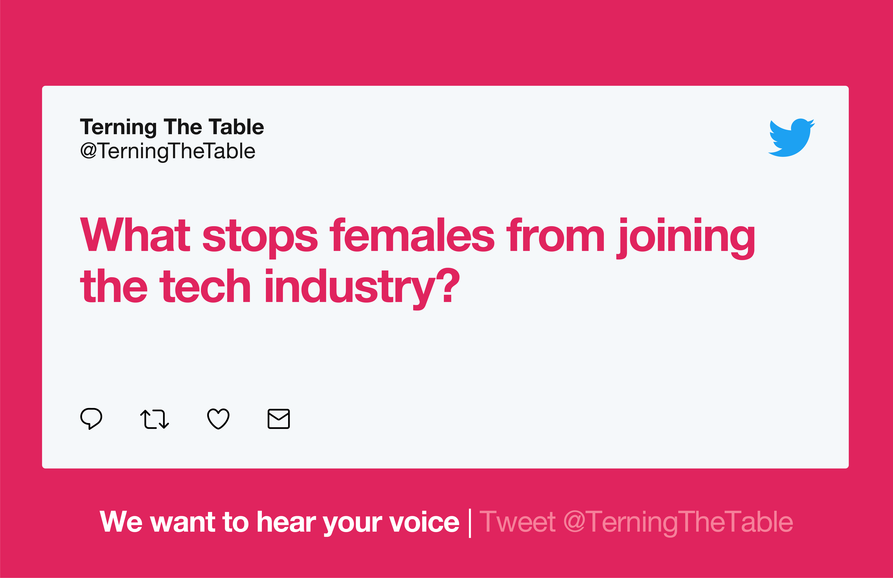
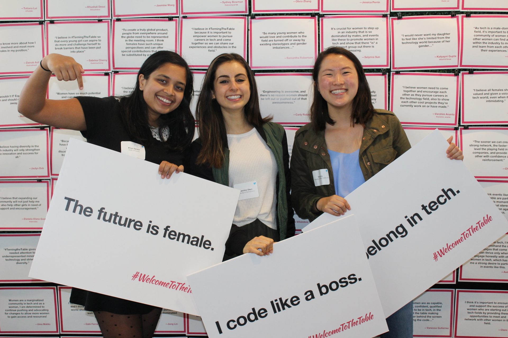
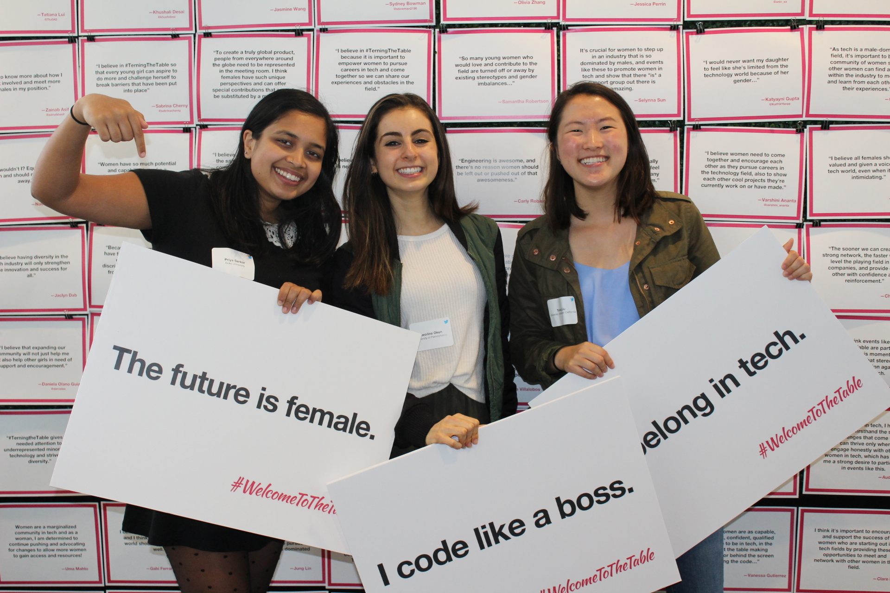

As part of my internship with Twitter I was assigned a personal project for the Summer. Working on the University Recruiting team and having first-hand experienced some of the disadvantages of being a female in tech, I was inspired to focus my project on alleviating these disadvantages by increasing the number of female interns in tech. Twitter’s program had made incredible progress in increasing the number, and I wanted to continue to build on this, not only at Twitter but at all tech companies. I created and led a campaign called “TerningTheTable” which included a viral video, support from Twitter’s Leadership team, and an event called “Welcome To The Table” that saw 150+ female students attend and a panel of female interns from Google, Facebook, and Github. With overwhelming support, the campaign is still continuing on LinkedIn, Facebook, Twitter and Instagram. I am grateful to have received support from Twitter’s Leadership, the University Recruiting Team, and the female interns.


 
